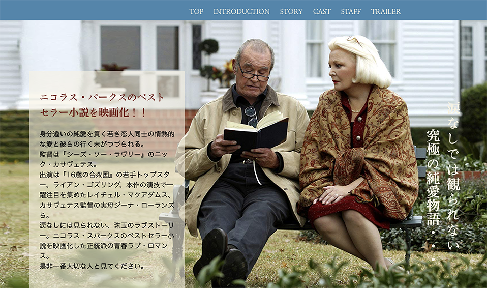
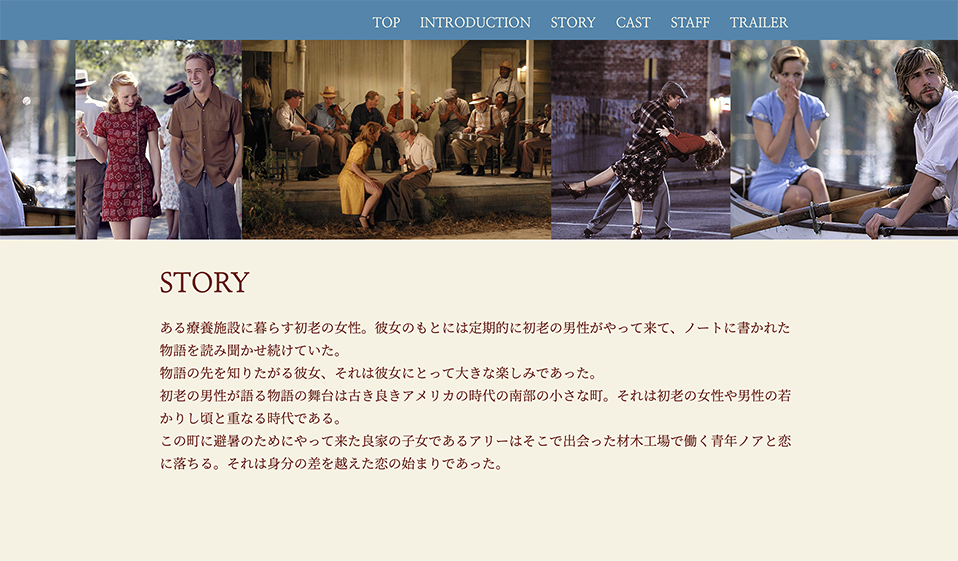
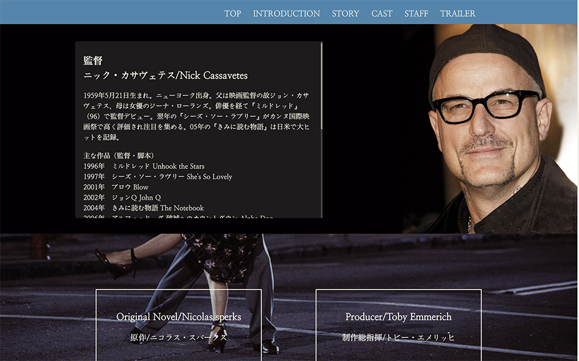
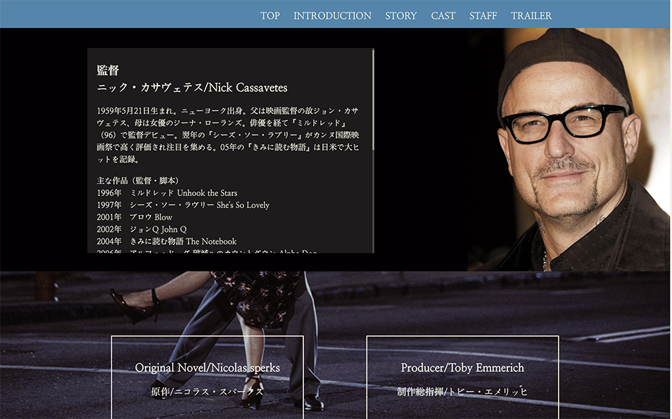
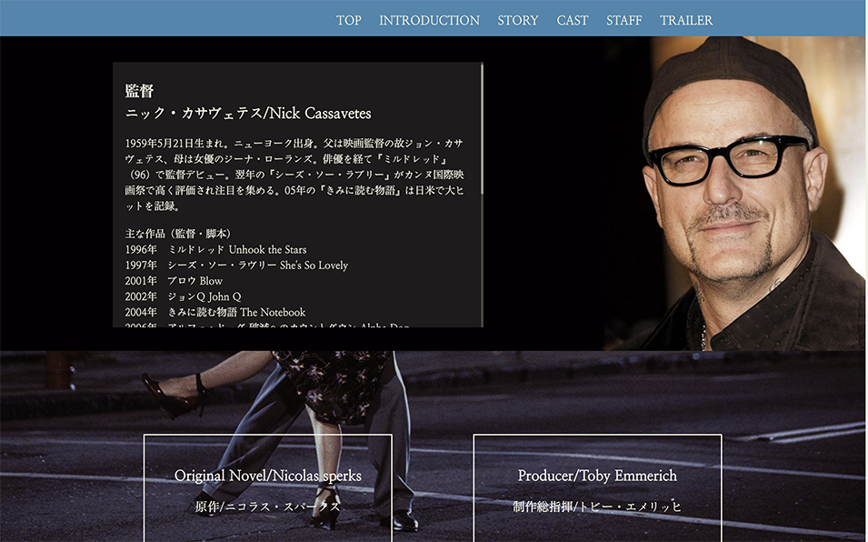
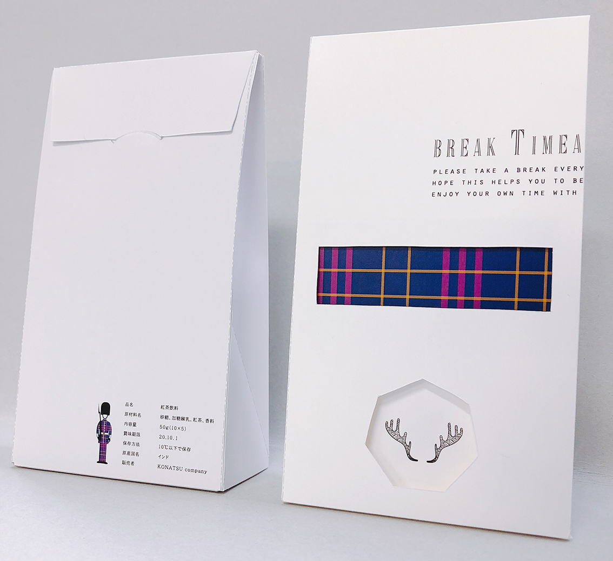
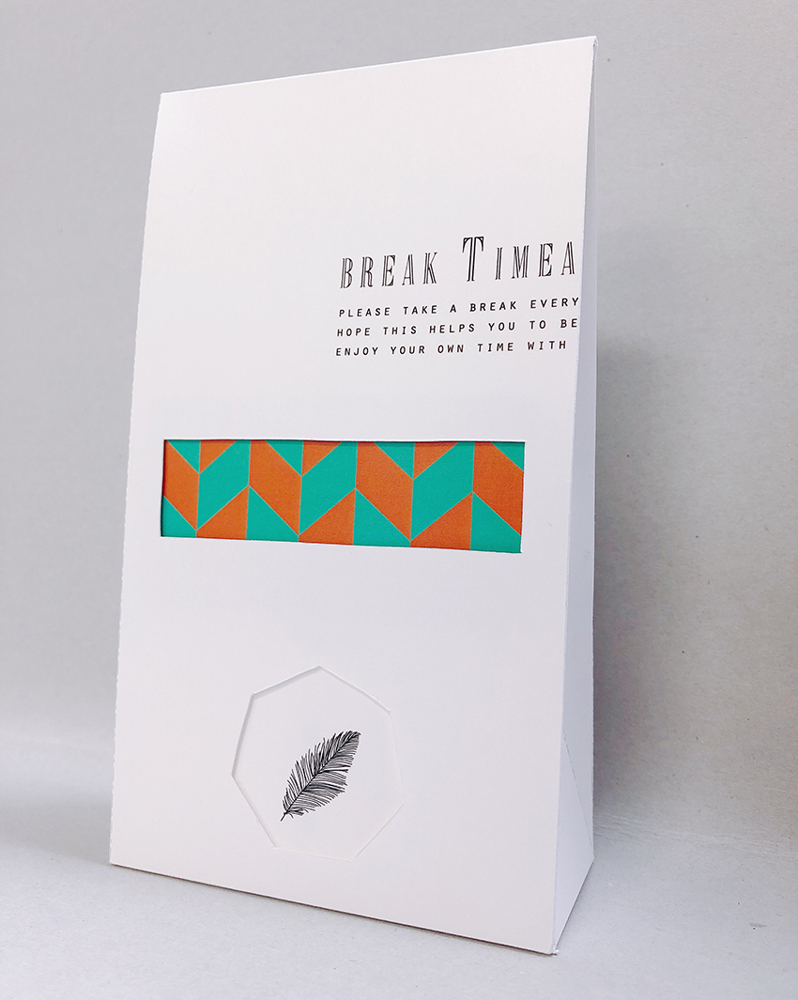
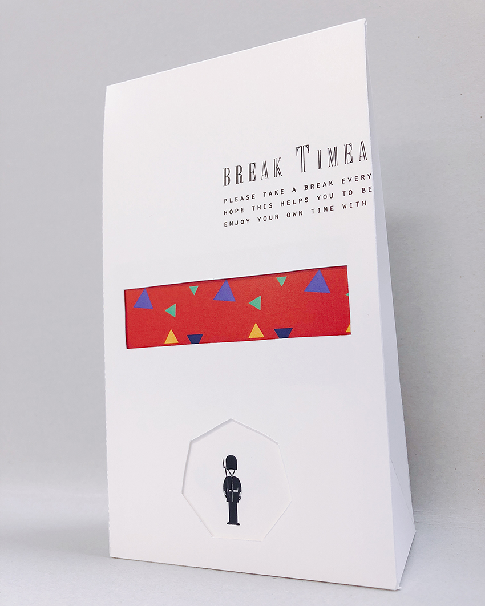
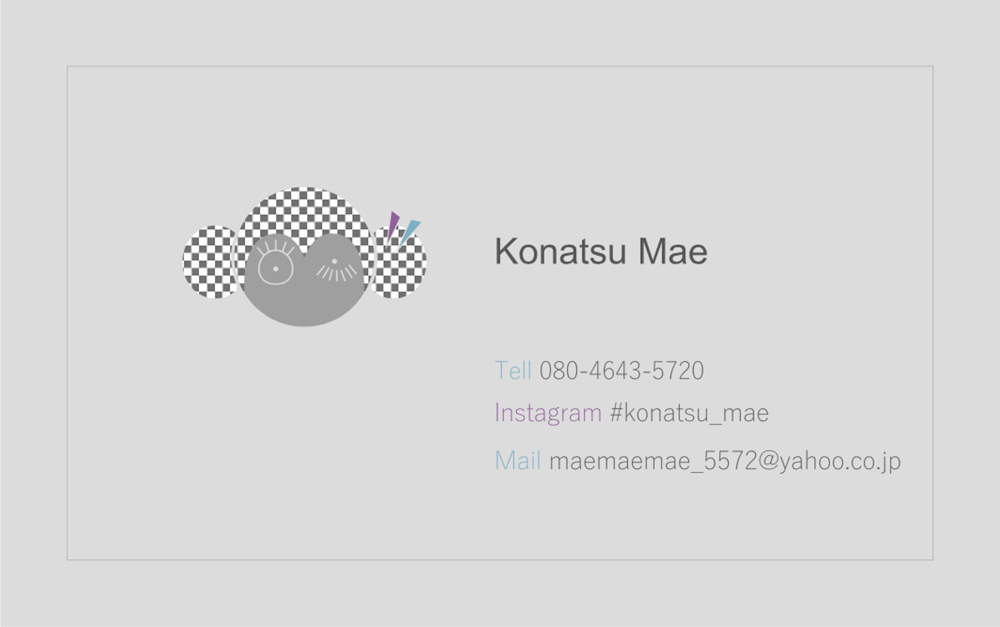
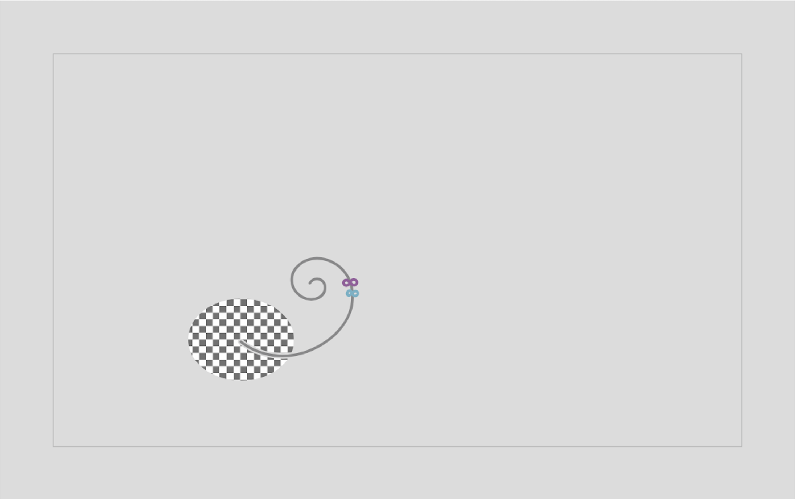

scroll
ABOUT
WEBデザイナーの職業訓練校卒業後、約3年半WEB制作会社にてフロントエンド開発に携わってまいりました。
誰がみても分かりやすく、また後から修正をかけやすいコードを書くように心がけております。
デザインに関しましては、使いやすさを重視した上でフォントやカラーにこだわったシンプルで繊細なデザインを目標にデザインを行っております。
SKILL
言語スキル
HTML,CSS,Javascript(Jquery)
WEBクリエイター能力認定試験（HTML5.0）スタンダード 修了
使えるソフト
Adobe:Photoshop
Adobe:Illustrator
Adobe:Dreamweaver
JetBrains:WebStorm
WORK WEB
Webサイト制作（デザインからコーディングまでの練習）


 


主にフロントエンド開発を担当したサイト、またはページ（実務）
※HTML,CSS,Javascript(Jquery)を使用
WORK DTP
紅茶のパッケージデザイン（練習）



紅茶のティーパックセットのパッケージデザインをしました。
箱の窓から中身が見えるようになっており、紅茶を飲むたびにデザインが変わるようになっております。
箱をシンプルで洗練されたデザインにすることによって、より一層中身のデザインが際立つようにしました。
名刺制作（ロゴ制作から練習）


ロゴ：猿をモチーフにした理由については、人類の先祖である猿はいろいろな進化を遂げて人間になったことから自分もこれからどんどん進化していくことを表しています。また、自分の名前「こなつ」を数字で表すと「572」であることから、まつ毛やイヤリングの数とリンクさせています。
名刺：ロゴのデザインとマッチするカラー、また情報を読み取りやすいようシンプルさを重視しました。裏面はロゴとリンクさせた形で遊び心を入れています。